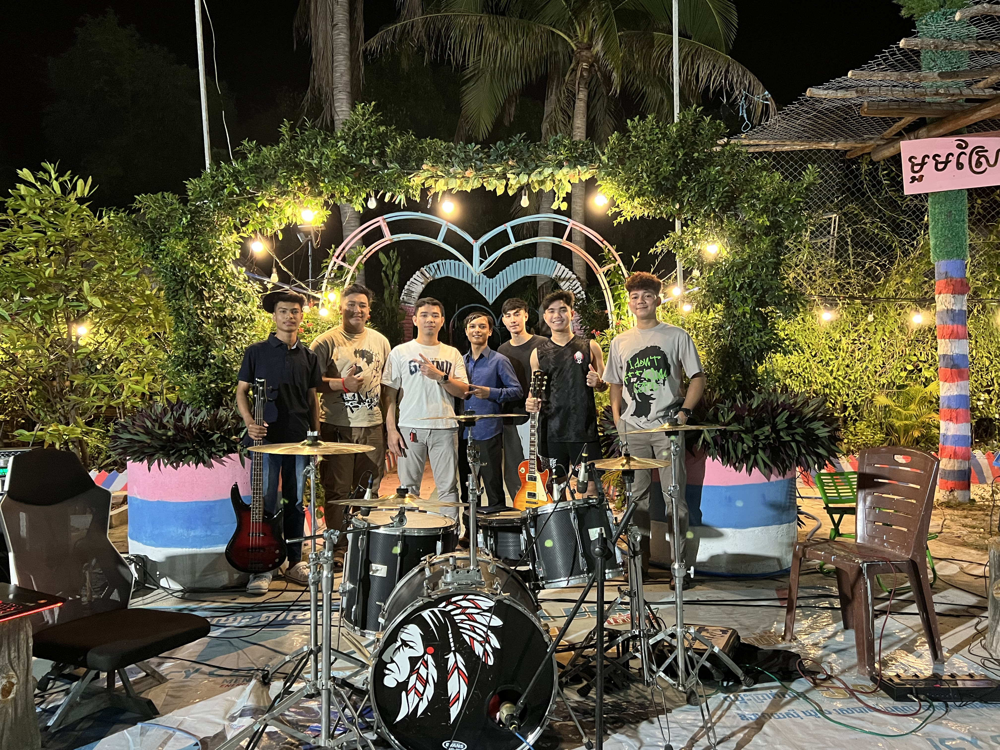
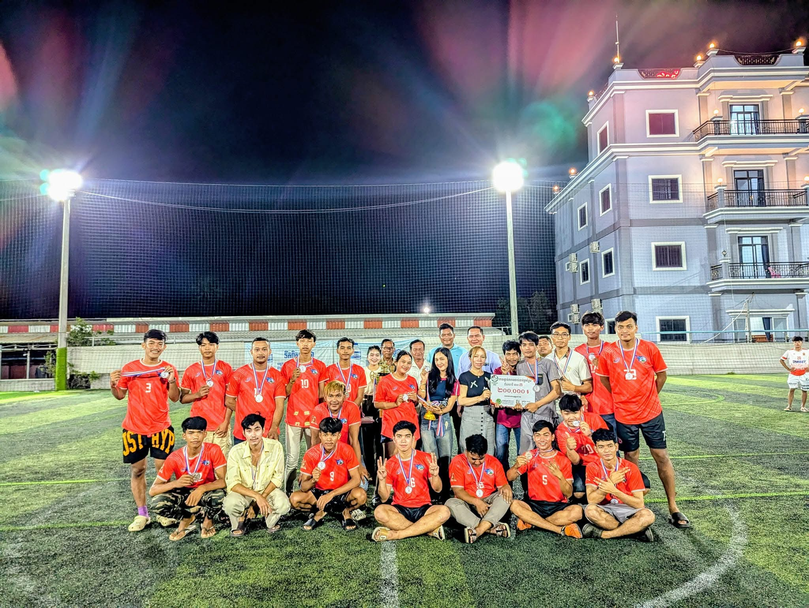

Music — Piano · Guitar · Roneat · Kong Vong Toch
I combine practical experience in networking, CCTV systems and technical troubleshooting with growing skills in web development and cybersecurity.
I have always been curious about how technology and systems work. From an early age, I enjoyed exploring technology, understanding how different systems functioned, and finding ways to solve technical problems. This curiosity gradually developed into a strong interest in Information Technology.
My technical journey began through practical experience rather than formal education. From January 2022 to May 2026, I worked independently in CCTV installation, gaining hands-on experience with IP cameras, network cabling, network configuration, and DVR/NVR systems.
I particularly enjoyed diagnosing problems, understanding why a system was not functioning correctly, and finding practical solutions. Much of my technical knowledge was initially developed through self-directed learning, including online resources, AI-assisted learning, experimentation and practical problem solving.
My interest in web development began when I created a digital wedding invitation website for my brother. I continued improving it as the wedding approached, which introduced me to designing, developing and maintaining a real digital project.
IT combines the things I enjoy most: understanding systems, solving technical problems, learning new technologies and building practical solutions. My primary areas of interest are networking, web development and cybersecurity, with a long-term goal of becoming a professional Network and Cybersecurity Analyst.


Studying a Diploma of Information Technology while strengthening practical knowledge in networking, cybersecurity and web development.
Developing skills across networking, cybersecurity, web development and IT systems.
Built foundations in communication, teamwork, business concepts and academic skills.
Completed upper secondary education before progressing into tertiary study.
I prefer to show what I can actually do rather than use inflated skill percentages.
Each project represents practical experimentation, problem solving, and continued improvement.
Designed and developed a digital wedding invitation website for my brother, then improved and maintained it throughout the preparation period.
Hands-on installation and configuration of CCTV and IP camera systems including cabling, network configuration, DVR/NVR setup, remote access, and troubleshooting.
A personal multiplayer server project involving hosting, configuration, networking, modifications, maintenance, and technical troubleshooting.
Provided independent CCTV installation and technical setup services for residential and small-business environments. Work included network cabling, IP camera and DVR/NVR configuration, remote monitoring, camera placement planning, connectivity troubleshooting, and direct customer communication.
Developing professional communication, teamwork, customer-service and time-management skills in a busy café environment while preparing beverages, managing multiple tasks, maintaining quality, and working effectively under pressure.
Founded and captained a football team that regularly trains and plays together. Helped lead the team to a top-three tournament finish in 2024 while developing leadership, communication, teamwork and decision-making skills.
I am interested in learning from professionals, collaborating on technical projects, and exploring opportunities within Information Technology, networking and cybersecurity.